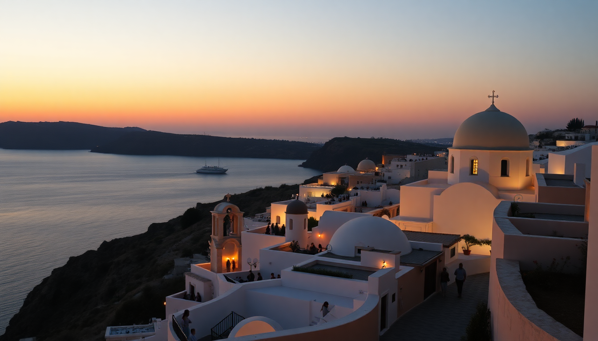

Best Time to Visit Greece: Seasonal Guide for Athens, Santorini & Mykonos

What does each season actually feel like in Greece?
I’ve been to Greece in every season except deep winter, and the difference between a July trip and an October trip is night and day. In summer, you’re sweating through your shirt by 10 a.m. on the Acropolis, and Mykonos feels like a non-stop club. In spring, the same streets are quiet, the hills are green, and you can actually hear the waves. You don’t need to avoid summer entirely—but you do need to know what you’re signing up for.
When is the best time to visit Athens?
Athens is a year-round city, but the sweet spot is April through June and September through October. I walked through Plaka in late May and had whole alleyways almost to myself. The Acropolis wasn’t a shuffle of selfie sticks, and I could sit at a café in Monastiraki without a wait.
- Spring (March–May): Wildflowers on Filopappou Hill, mild temps (18–25°C), and cheap flights. We ate at Ama Lachei in Exarcheia and had the terrace to ourselves.
- Summer (June–August): Crowded, hot (35°C+), but the energy is electric. Book the Acropolis Museum early or go at sunset. We stayed at The Foundry Suites in Psiri—central but noisy.
- Fall (September–November): My favorite. The sea is still warm for a day trip to Piraeus, and the National Garden is golden. Tavernas in Koukaki have tables out without the July scramble.
- Winter (December–February): Cold and rainy, but museums are empty. The Benaki Museum is a solid indoor option. Hotels drop to €60–80 a night.
When should you go to Santorini without losing your mind?
Santorini is stunning, but it’s also a logistical puzzle. I went in mid-June and again in early October. The June trip was a circus. The October trip was bliss—still warm enough to swim, but the cruise ships had mostly stopped.
- May–June and September–October are the golden windows. You get 22–28°C, blue skies, and half the crowds.
- July–August is peak. Fira’s main walking path becomes a human conveyor belt. Sunsets at Oia require staking out a spot two hours early. We skipped the famous castle and watched from Kastro Oia Restaurant—pricey but worth it for the view without the crush.
- November–March is off-season. Many hotels and restaurants close. You’ll have the caldera views to yourself, but it’s windy and some days the ferry doesn’t run. We tried it once in December and got stuck in Athinios Port for four hours.
- April is a gamble. Weather can be gorgeous or gray. We stayed at Aigialos Hotel in Fira and had the pool to ourselves, but the Skaros Rock hike was muddy.
Is Mykonos worth the hype, and when does it calm down?
Mykonos is a party island that also has quiet corners—if you pick the right time. I went in late August and hated the crowds. I went again in late September and loved it. The difference is the wind, the prices, and the vibe.
- June and September are the sweet spots. The meltemi wind is strong in August, but in September it’s lighter. We rented a car and drove to Agios Sostis Beach—no umbrellas, no music, just locals.
- July–August is peak. Little Venice is shoulder-to-shoulder at sunset. A beer at Scorpios costs €12. The bus to Paradise Beach is packed like a Tokyo subway.
- May and October are shoulder seasons. Some beach clubs are closed, but you can walk into Kiki’s Tavern without a reservation. We ate there in October and had grilled octopus with no wait.
- November–April is mostly dead. Most shops in Chora are shuttered. The wind can make the ferry ride from Rafina Port miserable.
How do crowds and prices shift across the year?
This is where the practical math matters. Greece has three distinct pricing tiers: low season (Nov–March), shoulder (April–June, Sept–Oct), and high (July–August). The difference between a hotel in shoulder vs. high can be 2x to 3x.
- High season (July–August): Hotels in Mykonos Town start at €250/night for basic rooms. Flights from the US are $1,200+. Ferry tickets from Piraeus to Santorini need booking weeks ahead.
- Shoulder season (May–June, Sept–Oct): We booked a room at Hotel Eleni in Mykonos for €120/night in late September. Same room was €300 in August. Flights drop to $700–900.
- Low season (Nov–March): Athens hotels under €80 are common. Santorini villas can drop to €90/night. But many island tavernas close, and the Blue Star Ferries schedule thins out.
What about weather and swimming conditions?
If swimming is your priority, the window is narrower than you think. The Aegean Sea is cold until late May and starts cooling again in October. I swam at Red Beach in Santorini in early June and the water was brisk but fine. By mid-October, the same beach was empty and the water was chilly.
- Best swimming months: June through September. July and August water temps hit 24–26°C.
- Wind factor: The meltemi blows hardest in July and August, especially in Mykonos. It can make the sea choppy and beach days less relaxing.
- Rain: Almost none from June to September. October sees a few showers. November is the start of the wet season.
FAQ
What is the absolute worst time to visit Greece? Late July through mid-August. The heat is oppressive, crowds are at their peak, and prices are highest. If you can only go in summer, aim for late August or early June instead. The difference in experience is massive.
Can I visit the Greek islands in winter? Yes, but with serious caveats. Many hotels, restaurants, and ferry routes shut down from November to March. Santorini and Mykonos feel like ghost towns. Athens and Crete are more viable winter destinations. I’d only recommend winter for a city-focused trip.
Is it worth visiting Greece in May or October? Absolutely. May has green hills, wildflowers, and empty beaches. October has warm sea water (still swimmable in early October), lower prices, and calm crowds. Both months give you the best balance of good weather and manageable tourism.
Conclusion
- Best all-around months: May, June, September, and October. You get good weather without the summer chaos.
- Best for swimming: June through September. Water is warmest in July and August.
- Best for budget: April, May, October, and November. Prices drop hard outside July–August.
- Best for avoiding crowds: April–early June and late September–October. You’ll share the Acropolis with dozens, not thousands.
- Worst for comfort: Late July–August. Overheated, overpriced, and overcrowded. Only go if you have no other choice.